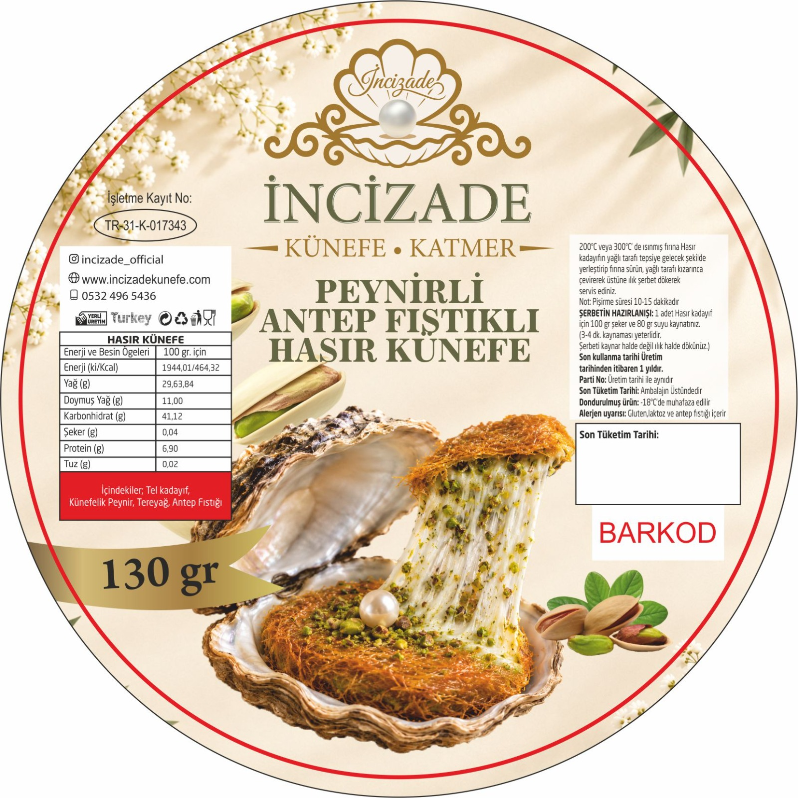

01GELENEKSEL TATLAR
İncizade
lezzetleri.
Künefeler ve katmerler, ustalıkla hazırlandı.
01 / KÜNEFELER
Künefeler
✳
İNCİZADEİMZASI
KLASİK LEZZET
Peynirli Künefe
Ürün detayları için keşfet
02 / KATMERLER
Katmerler
✳❧